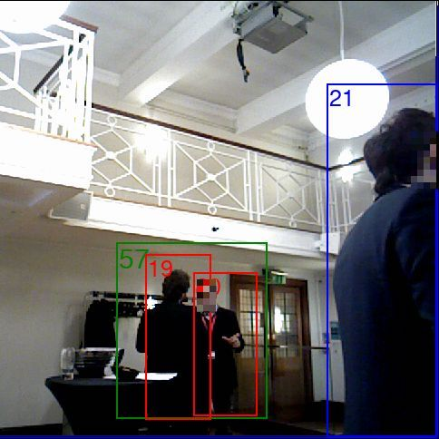

|
|
SAIR Lab is on a mission to develop the next generation of robots that can learn from humans and can act in concert with humans. |
 |
Robocentric Conversational Group Discovery Viktor Schmuck, Tingran Sheng, Oya Celiktutan Accepted to ROMAN2020: The 29th IEEE International Conference on Robot & Human Interactive Communication Proceedings, 2020 [Project page] |
|  |
RICA: Robocentric Indoor Crowd Analysis Dataset Viktor Schmuck, Oya Celiktutan UKRAS20 Conference: “Robots into the real world” Proceedings, 2020 [Project page] [Paper] |